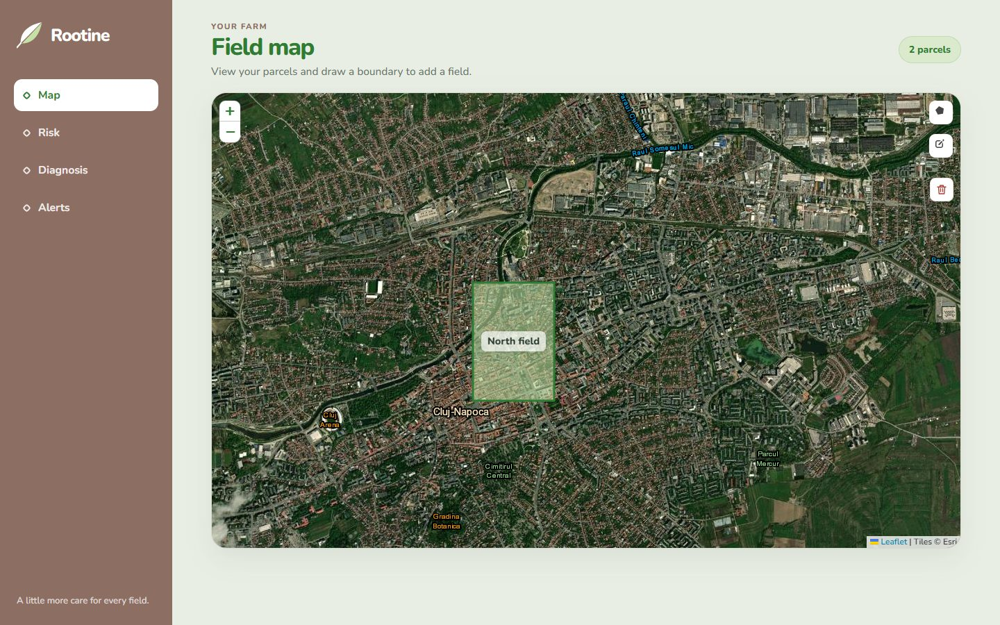
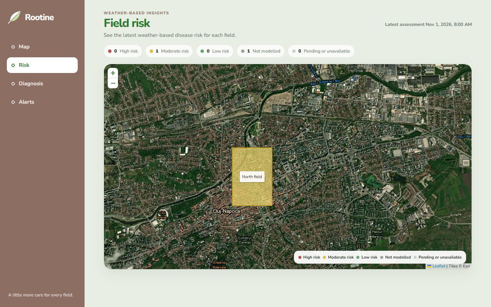
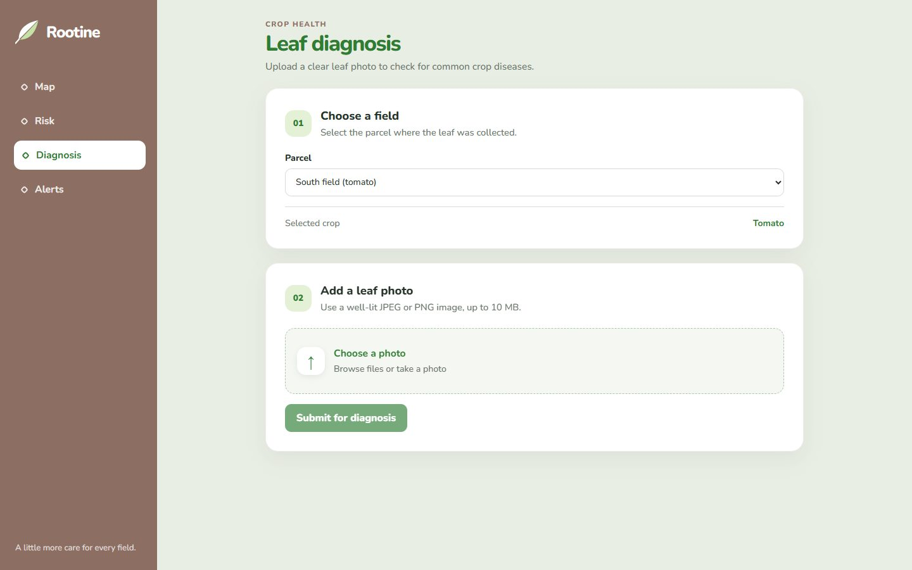

Boala se vede
întâi pe frunză.
Bolile plantelor se observă greu la început și costă mult dacă sunt găsite târziu. Rootine le găsește dintr-o fotografie și din vreme.
ML · Diagnostic din fotografie
Poză în. Top 3 boli sau „nesigur” afară.
tomate și cartofi
tot catalogul PlantVillage
3.064 imagini de test
*Imagini de laborator; pe poze din câmp valorile vor fi mai mici. Sursă: docs/sprints/sprint-1.md. Date: PlantVillage (Mohanty et al., 2016), CC BY-SA 3.0.
ML · Risc meteo
Vremea și regulile dau riscul.
- 1
Vreme
Open-Meteo, date orare
- 2
Reguli
Hutton (mană) · TOMCAST
- 3
Risc pe parcelă
nivel și motiv
Sursă: ai-service/app (hutton.py, tomcast.py), PR #72 îmbinat în main.
Backend
10 endpoint-uri, 46 de teste, CI verde.
- 1
Web
nginx + React
- 2
Backend
Spring Boot 4, Java 21, JWT
- 3
Date
PostgreSQL + PostGIS
- 4
AI service
FastAPI + ONNX Runtime
Sursă: controllere backend, .github/workflows/ci.yml, main la 11 noiembrie 2026. Autentificare: token JWT de demo; înregistrarea cu email vine mai târziu.
Frontend
Harta, poza,
riscul.
- Desenezi parcelele pe hartă
- Încarci o poză cu o frunză
- Vezi riscul pe fiecare parcelă



Capturi din aplicația rulată cu date de test. React, TypeScript, Leaflet. Hartă: Esri.
Demo
Până la Demo 2 · 12 decembrie
- Toate cele 38 de clase din PlantVillage
- Test pe poze din câmp, nu doar de laborator
- Model mai bun pe poze reale
- Harta de risc pe date din /v1/risk
- Înregistrare cu email și alerte